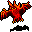

火山 Volcano
英語版 CrawlWiki の記事「Volcano」(0.25 向け、2023-08-31 版)の翻訳です。原文の著者は編集履歴をご覧ください。
この記事は 0.25 の時点の内容で、最新の 0.34 とは違うところがあるかもしれません。
| 巨大な黒曜石の塊で築かれた火山のうだるように暑い部屋は、かつては何か奇妙な神の神殿として、あるいは強大な炎の巨人の住処として使われていたのかもしれない。空気は息苦しいほどの熱で揺らめき、火山の心臓の鈍い轟きは止むことがない。 |
 火山は一時的なポータルの階だ。たいていは炎にちなんだモンスターと戦利品があるが、アンデッドや、炎の装備で身を固めたさまざまな人型の生き物、ときには爪のゴーレムが出ることもある。いちばんの特徴は、火山がときどき噴火することだ。結果はお察しのとおりひどいものになる。
火山は一時的なポータルの階だ。たいていは炎にちなんだモンスターと戦利品があるが、アンデッドや、炎の装備で身を固めたさまざまな人型の生き物、ときには爪のゴーレムが出ることもある。いちばんの特徴は、火山がときどき噴火することだ。結果はお察しのとおりひどいものになる。
火山は獣の棲み処とオークの坑道に現れる。「岩の雪崩の崩れ落ちる轟音」が聞こえたら、火山がある合図だ。
構造
いくらかの違いはあるが、火山はだいたい、小さな入口の区画と、大きな中央の部屋からなる。中央の部屋は大部分を溶岩の池が占め、その真ん中に石か金属の壁で囲まれた部屋があって、炎にちなんだ戦利品と強力なモンスターが詰まっている。ほかの形には、曲がりくねった狭い通路があるものや、小さな中央の部屋から何本も枝道が伸び、それぞれに戦利品が少しずつ置かれているものがある。火山から完全に隔てられた石造りの建物という形もありうる。ここでは噴火が起きるかわりに天井が少しずつ崩れ、宝の部屋がひとつずつ埋まっていく。宝が欲しければ急ごう。
「辺りに硫黄の臭いが濃く立ち込めてきた。」というメッセージに気をつけよう。これは、火山のかなりの範囲がまもなく炎の雲で埋まるという意味で、マップによっては新しい岩の壁もできる。そうなると、マップによっては、すみずみまで探索するのに飛行の手段と掘削のワンドが必要になるかもしれない。
戦略
- 火炎耐性は一段階あるだけでも大違いだ。できるだけ積み重ねよう。持っていなくても、ここで見つかる戦利品の多くには火炎耐性が付いている。ふつうは火炎耐性のエゴが付かないアイテムにさえ付く。とはいえ、それを手に入れるまでには激しい戦いを抜けなければならない。いちばん厳しい戦いを生き延びるために、耐性の薬を一本か二本飲むのをためらわないこと。
- 火炎耐性を得る手段がまったくないなら、この寄り道の階は飛ばしたほうがいいかもしれない。たいてい入口の近くに出口があるので、どんな相手と戦うことになるのかをのぞいてから、先へ進むか決められることが多い。
- すでに雲があるマスには、新しい雲はできない。悪臭の雲を使えるなら、噴火の前に自分のいる所に悪臭の雲を出しておけば、噴火を簡単に避けられる。ただし毒耐性がなければ気をつけよう。たぶん自分が混乱してしまう。
- ここにいるモンスターのほとんどは冷気に弱い。
- ここでは隠密がとても役に立つ。溶岩の中に住む厄介なモンスターたちは倒しても割に合わないので、隠密が高ければまとめて無視するという手が取れる。
- 戦利品に手が届かなくなる火山の構造が二つある。ひとつは噴火のたびに天井の一部が崩れるもの。もうひとつは、細長い溶岩の池の縁に沿って戦利品が散らばっていて、やがて溶岩がせり上がり、まだ拾っていないものを焼き尽くしてしまうものだ。スピードの薬を持っていてこうしたマップに出くわしたら、できるだけ多くの戦利品を急いで拾い集めるために使う価値は十分にある。ただ、必死に駆け回るあまり、一度に手に負えないほどの注意を引きつけないよう気をつけよう。
モンスター
ほぼすべての火山に、次のモンスターがいる。
| S |
b  火炎コウモリ |

火山のモンスターにはいくつかの組み合わせがあり、それぞれ次の確率で生成される。
| 組み合わせ | 確率 |
|---|---|
| 人型の組 | 45% |
| 悪魔の組 | 20% |
| 獣の組 | 20% |
| 精霊の組 | 15% |
- 人型の組: セントールとヤクトール、オーガ、サラマンダーのどれかに、赤色ドラコニアンの基本種 / 地獄の騎士が一体加わる。どれも炎の武器と防具を身につけている。
- 悪魔の組: 紅の悪魔 / 赤い醜きもの / ヘルハウンド、噴煙のデーモン / サンデーモン、オークの魔道士 / 地獄の騎士。
- 獣の組: ヘルハウンド / スチームドラゴン / 火炎コウモリの群れ、地獄の豚 / リンドヴルム、ファイアドラゴン / 火吹き蟹。
- 精霊の組: 火の精霊 / 大地の精霊 / ガーゴイル、イフリート、岩の巨人。
さらに、特定の火山には魔術師、爪のゴーレム、黒曜石の像、骸骨の戦士のような特別なモンスターがいることもある。
変更履歴
- 0.19で、火山のモンスターの組み合わせが作り直されて強化され、戦利品の質も上がった。ユニークも生成されなくなった。
- 0.12より前は、組み合わせはかなり弱かった。人型の組にはただのオーク、大コボルド、ノールが入っていた。人型でない組には、コンソール版で赤い文字で表示されるというだけの理由で選ばれた、脈打つ肉塊、巨大アリ、背赤蜘蛛のような妙なモンスターがいた。
- 火山は0.6で追加された。
| 一時的なポータル | |
|---|---|
| 序盤 | 納骨堂 • 下水道 |
| 中盤 | 濠城 • 試練場 • 氷の洞穴 • 火山 |
| 終盤 | 塩の荒野 • 魔術研究所 • ジグラット (メガジグ) |
| ゲーム全体 | 死者の都 |
| 戦いのない場所 | バザール • 宝の埋蔵庫 |